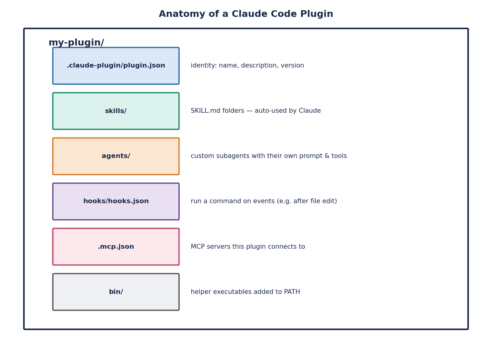

Claude Plugins
Overview
A Claude Code Plugin bundles Skills, subagents, hooks, MCP server configs, and more into one shareable, versioned unit. If a Skill is a single recipe card, a Plugin is the whole recipe box — plus the pantry connections (MCP servers) and the kitchen rules (hooks) that go with it, all packaged so the entire set travels together instead of being copy-pasted piece by piece.
Plugins are the natural endpoint of the roadmap that starts with a single Skill and a single MCP server: once you have a few Skills, an MCP connection or two, and maybe a hook enforcing a house rule, packaging them together as a Plugin is what lets that whole working system travel as one thing and be shared, versioned, and namespaced like real software rather than a loose pile of files. This very site is itself an example of the pattern in production: everything under this repository's commands/ and skill folders — the platform-expert Skills, the routing logic in platform-registry.md — is a Plugin, namespaced so its Skills are invoked as /dobby:wpp-expert rather than colliding with anyone else's /wpp-expert.
What's in a Plugin
A Plugin's anatomy separates its pieces by kind rather than lumping everything into one folder. A .claude-plugin/ directory holds exactly one thing — plugin.json, the manifest — while Skills, agents, hooks, and MCP server configs each get their own top-level folder or file alongside it, never nested inside .claude-plugin/ itself.

.claude-plugin/plugin.json holds only the manifest, while skills/, agents, hooks, and MCP server configs each live in their own top-level location alongside it.Skills live in a skills/ folder next to .claude-plugin/, and each skill's folder name becomes its command name, prefixed by the Plugin's own namespace — a skills/hello/ folder inside a Plugin named my-first-plugin becomes the command /my-first-plugin:hello. Agents, hooks, and MCP configs follow the same top-level pattern, each in their own dedicated location rather than buried inside the manifest folder.
The manifest itself, plugin.json, is deliberately minimal — it identifies the Plugin and its version, not the content inside it:
{
"name": "my-first-plugin",
"description": "A greeting plugin to learn the basics",
"version": "1.0.0",
"author": { "name": "Your Name" }
}That's the entire required manifest: a name, a description, a semantic version, and an author. Everything that actually does work for the user — the Skills, the agents, the hooks, the MCP configs — lives in the sibling folders described above, discovered by the Plugin's name and structure rather than being listed out inside plugin.json itself.
Why Bother Packaging
- Shareability — a Plugin lets teammates install one thing instead of copy-pasting a pile of loose Skill folders, hook scripts, and MCP configs by hand and hoping they got every file. Anyone who wants what you built gets it in one step, with nothing left behind.
- Versioning — because a Plugin carries a version number in its manifest, updates happen deliberately: you bump the version when something changes, and everyone installing or updating the Plugin gets that change on purpose, rather than someone's local copy of a Skill silently drifting out of sync with everyone else's.
- Namespacing — every command a Plugin exposes is prefixed by the Plugin's own name, so
/my-plugin:hellocan never collide with someone else's unrelated/hellocommand. This matters a lot once an organization has many teams publishing their own Skills — namespacing is what lets them coexist without anyone having to coordinate naming in advance. - Distribution — a packaged Plugin can be published to a marketplace, whether that's a team-private marketplace, the broader community marketplace, or Anthropic's official one, so other people can discover it and install it with a single command instead of needing to know it exists and hand-copy it from a repository.
Trying and Building Your First Plugin
- Start standalone. Put a single Skill in
.claude/skills/inside one project and iterate on it there quickly — there's no reason to package anything as a Plugin before you know the Skill itself actually works and triggers the way you expect. - Scaffold a Plugin once it's useful to others. Run
claude plugin init my-toolto generate the standard structure automatically, or hand-build it yourself: create.claude-plugin/plugin.jsonplus askills/folder holding whatever Skills you've already validated. - Test it locally before sharing it with anyone. Run
claude --plugin-dir ./my-pluginto load the Plugin directly from its local folder, and confirm its Skills trigger correctly, its MCP configs connect, and any hooks fire as expected — all before it's published anywhere. - Share it via a marketplace. Once it's polished, publish it to a private repository for your own team, or submit it to the community marketplace, so others can discover and install it with one command instead of being handed a folder to copy manually.
Common Interview Questions
hello or review would collide the moment both were installed — whichever loaded second would shadow or conflict with the first. Namespacing prefixes every command with the Plugin's own name (a skills/hello/ folder inside my-first-plugin becomes /my-first-plugin:hello), so commands from different Plugins can never collide regardless of how many teams are publishing their own Skills independently — no central naming coordination required..claude/skills/ and iterate. Reach for a Plugin once you have multiple related pieces that need to travel and version together — several Skills plus an MCP server they rely on, or a hook enforcing a rule alongside the Skills it governs — and especially once you want other people to install the whole set reliably, with versioning and namespacing, rather than hand-assembling loose files themselves..claude-plugin/ hold only plugin.json, with Skills, agents, hooks, and MCP configs each living elsewhere?claude --plugin-dir ./my-plugin to load the Plugin straight from its local folder without needing to publish it anywhere first. From there, verify each piece actually works: ask something that should trigger each bundled Skill and confirm it fires correctly, confirm any bundled MCP server configs actually connect, and confirm hooks fire on the events they're supposed to — all before submitting it to a team-private repository or a community marketplace.Key Takeaways
plugin.json, lives alone inside .claude-plugin/ and only identifies the Plugin (name, description, version, author); everything that does work lives in sibling folders like skills/. Skill commands are namespaced by the Plugin's own name (/my-plugin:hello), which is what lets many teams' Plugins coexist without naming collisions. Packaging pays off through shareability, deliberate versioning, namespacing, and one-command distribution via a marketplace. Build the habit in order: prove out a standalone Skill first, scaffold the Plugin structure once others need it, test locally with --plugin-dir, then publish.